China · Tier IX
All nations and tiers · EU v20410 → RU v14600ru · 3 November 2026
BZ-58-2 · Tier IX
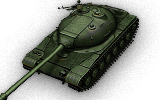
Armor & health
Hull armor · front (mm) EU 70  RU 110
RU 110
Hull armor · side (mm) EU 70 RU 80
BZ-68 · Tier IX
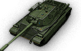
Gun handling
Dispersion · turret traverse EU 0.12  RU 0.16
RU 0.16
Dispersion · firing EU 4 RU 3.50
Mobility
Tank traverse on hard terrain (°/s) EU 29.51 RU 35.41
Tank traverse on medium terrain (°/s) EU 26.83 RU 32.19
Tank traverse on soft terrain (°/s) EU 15.53 RU 18.64
Armor & health
Health EU 2 000 RU 1 900
DZT-159 · EU IX → RU X
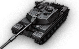
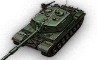
Penetration (mm) 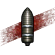
EU  HEAT 310 /
HEAT 310 /  HE 68 → RU AP 258 /
HE 68 → RU AP 258 /  HEAT 340 /
HEAT 340 /  HE 68
HE 68
General
Tier EU 9 → RU 10
Firepower
DPM (HP/min) EU 2 353.44 RU 2 753.52
Rate of fire (rounds/min) EU 5.35 RU 6.26
Reload time (s) EU 11.22 RU 9.59
Shell velocity (m/s) EU 1 150 RU 950
Ammo capacity EU 40 RU 48
Potential damage EU 17 600 RU 21 120
Gun handling
Aim time (s) EU 2.59 RU 2.49
Dispersion (m/100 m) EU 0.38 RU 0.36
Dispersion · damaged EU 0.77 RU 0.73
Dispersion · moving EU 0.20 RU 0.14
Dispersion · tank traverse EU 0.20 RU 0.14
Dispersion · turret traverse EU 0.08 RU 0.10
Mobility
Forward speed (km/h) EU 40 RU 50
Forward speed on hard terrain (km/h) EU 40 RU 50
Forward speed on medium terrain (km/h) EU 40 RU 50
Forward speed on soft terrain (km/h) EU 23.76 RU 35.80
Reverse speed (km/h) EU 15 RU 16
Engine power (hp) EU 640 RU 540
Power/weight (hp/t) EU 15.61 RU 13.17
Terrain resist (hard) EU 1.05 RU 0.67
Terrain resist (med) EU 1.15 RU 0.77
Terrain resist (soft) EU 2.40 RU 1.34
Turret traverse (°/s) EU 26.08 RU 35.46
Tank traverse (°/s) EU 41.72 RU 35.46
Tank traverse on hard terrain (°/s) EU 39.63 RU 33.69
Tank traverse on medium terrain (°/s) EU 36.33 RU 29.48
Tank traverse on soft terrain (°/s) EU 17.44 RU 16.84
Armor & health
Hull armor · front (mm) EU 120 RU 130
Hull armor · side (mm) EU 80 RU 100
Turret armor · front (mm) EU 270 RU 265
Turret armor · side (mm) EU 150 RU 110
Health EU 1 600 RU 2 000
Health · engine EU 260 RU 360
Health · track EU 240 RU 250
Health · ammo rack EU 210 RU 240
Miscellaneous
Stationary camo EU 14.76 RU 15.68
Stationary camo · after firing EU 2.80 RU 2.82
Moving camo EU 11.06 RU 11.74
Moving camo · after firing EU 2.10 RU 2.11
View range (m) EU 390 RU 400
Radio range (m) EU 750.96 RU 750
Shell cost EU 1 215 RU 1 065
WZ-111 model 1-4 · Tier IX
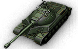
Firepower
DPM (HP/min) EU 2 190.30 RU 2 358.78
Rate of fire (rounds/min) EU 4.47 RU 4.81
Reload time (s) EU 13.42 RU 12.46
Gun handling
Aim time (s) EU 2.78 RU 2.49
Dispersion · moving EU 0.18 RU 0.16
Dispersion · tank traverse EU 0.18 RU 0.16
Dispersion · turret traverse EU 0.10 RU 0.08
Depression (°) EU 6 RU 5
Mobility
Forward speed on soft terrain (km/h) EU 27.49 RU 31.08
Engine power (hp) EU 650 RU 735
Power/weight (hp/t) EU 14.44 RU 16.33
Tank traverse (°/s) EU 36.50 RU 29.20
Tank traverse on hard terrain (°/s) EU 38.67 RU 38.17
Tank traverse on medium terrain (°/s) EU 34.80 RU 34.36
Tank traverse on soft terrain (°/s) EU 17.40 RU 17.18
Armor & health
Hull armor · front (mm) EU 120 RU 150
Health EU 1 900 RU 1 850
WZ-111 model 1-4 FL · Tier IX
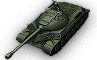
Firepower
DPM (HP/min) EU 2 190.30 RU 2 358.78
Rate of fire (rounds/min) EU 4.47 RU 4.81
Reload time (s) EU 13.42 RU 12.46
Gun handling
Aim time (s) EU 2.78 RU 2.49
Dispersion · moving EU 0.18 RU 0.16
Dispersion · tank traverse EU 0.18 RU 0.16
Dispersion · turret traverse EU 0.10 RU 0.08
Depression (°) EU 6 RU 5
Mobility
Forward speed on soft terrain (km/h) EU 27.49 RU 31.08
Engine power (hp) EU 650 RU 735
Power/weight (hp/t) EU 14.44 RU 16.33
Tank traverse (°/s) EU 36.50 RU 29.20
Tank traverse on hard terrain (°/s) EU 36.50 RU 29.20
Tank traverse on medium terrain (°/s) EU 32.85 RU 26.28
Tank traverse on soft terrain (°/s) EU 16.43 RU 13.14
Armor & health
Hull armor · front (mm) EU 120 RU 150
Health EU 1 900 RU 1 850
WZ-111G FT · Tier IX
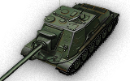
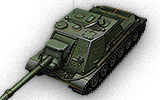
Penetration (mm)
EU AP 290 /  HEAT 350 /
HEAT 350 /  HE 90 → RU AP 290 /
HE 90 → RU AP 290 /  HEAT 395 /
HEAT 395 /  HE 90
HE 90
Firepower
DPM (HP/min) EU 2 470.26 RU 2 682
Rate of fire (rounds/min) EU 3.29 RU 3.58
Reload time (s) EU 18.22 RU 16.78
Gun handling
Dispersion · turret traverse EU 0.10 RU 0.06
Mobility
Tank traverse on hard terrain (°/s) EU 26.46 RU 31.27
Tank traverse on medium terrain (°/s) EU 19.11 RU 22.58
Tank traverse on soft terrain (°/s) EU 11.86 RU 14.02
WZ-114 · Tier IX
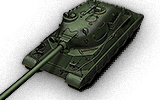
Firepower
DPM (HP/min) EU 1 658.37 RU 1 842.63
Rate of fire (rounds/min) EU 3.13 RU 3.48
Reload time (s) EU 19.18 RU 17.26
Gun handling
Aim time (s) EU 2.88 RU 2.68
Dispersion · moving EU 0.27 RU 0.24
Dispersion · tank traverse EU 0.27 RU 0.24
Dispersion · turret traverse EU 0.16 RU 0.20
Dispersion · firing EU 4 RU 7
Mobility
Reverse speed (km/h) EU 10 RU 14
WZ-120 · Tier IX
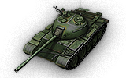
Gun handling
Aim time (s) EU 2.30 RU 2.59
Depression (°) EU 5.50 RU 3
Mobility
Forward speed on soft terrain (km/h) EU 36.95 RU 41.74
Engine power (hp) EU 650 RU 734.37
Power/weight (hp/t) EU 17.47 RU 19.74
Tank traverse (°/s) EU 57.36 RU 47.98
Tank traverse on hard terrain (°/s) EU 62.21 RU 62.02
Tank traverse on medium terrain (°/s) EU 55.30 RU 55.13
Tank traverse on soft terrain (°/s) EU 27.65 RU 27.56
Armor & health
Health EU 1 800 RU 1 750
WZ-120G FT · Tier IX
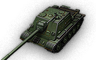
Firepower
DPM (HP/min) EU 3 129 RU 2 944.94
Rate of fire (rounds/min) EU 5.59 RU 5.26
Reload time (s) EU 10.74 RU 11.41
Gun handling
Aim time (s) EU 2.11 RU 2.21
Dispersion · moving EU 0.20 RU 0.18
Dispersion · tank traverse EU 0.20 RU 0.18
Dispersion · turret traverse EU 0.06 RU 0.10
Depression (°) EU 7 RU 6
Mobility
Forward speed on soft terrain (km/h) EU 28.60 RU 24.79
Engine power (hp) EU 600 RU 520
Power/weight (hp/t) EU 16.53 RU 14.33
Tank traverse (°/s) EU 43.81 RU 39.63
Tank traverse on hard terrain (°/s) EU 41.62 RU 37.65
Tank traverse on medium terrain (°/s) EU 37.83 RU 34.23
Tank traverse on soft terrain (°/s) EU 18.92 RU 17.11
Armor & health
Hull armor · front (mm) EU 200 RU 150
Health EU 1 800 RU 1 700
WZ-132A · Tier IX
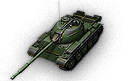
Firepower
DPM (HP/min) EU 2 250.07 RU 2 176.70
Rate of fire (rounds/min) EU 7.03 RU 6.80
Reload time (s) EU 8.53 RU 8.82
Gun handling
Aim time (s) EU 1.92 RU 2.21
Dispersion (m/100 m) EU 0.36 RU 0.40
Dispersion · damaged EU 0.73 RU 0.81
Dispersion · moving EU 0.12 RU 0.13
Dispersion · tank traverse EU 0.12 RU 0.13
Dispersion · turret traverse EU 0.09 RU 0.10
Depression (°) EU 6 RU 5
Mobility
Forward speed (km/h) EU 68 RU 64
Forward speed on hard terrain (km/h) EU 68 RU 64
Forward speed on medium terrain (km/h) EU 68 RU 64
Forward speed on soft terrain (km/h) EU 67.84 RU 54.27
Terrain resist (hard) EU 0.77 RU 0.96
Terrain resist (med) EU 0.86 RU 1.08
Terrain resist (soft) EU 1.73 RU 2.16
Turret traverse (°/s) EU 44.85 RU 41.72
Tank traverse (°/s) EU 46.93 RU 47.98
Tank traverse on hard terrain (°/s) EU 50.96 RU 52.09
Tank traverse on medium terrain (°/s) EU 45.30 RU 46.31
Tank traverse on soft terrain (°/s) EU 22.65 RU 23.15
Armor & health
Track armor EU 10 RU 15
Health EU 1 550 RU 1 250